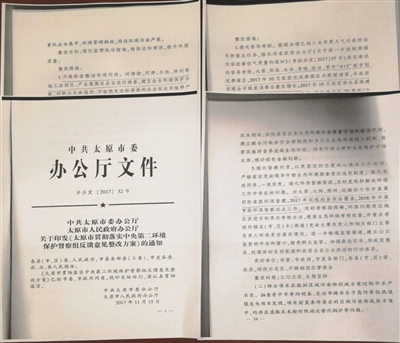

（原标题：山西多市环保整改方案明显抄袭）

中央第二生态环境保护督察组在忻州市代县检查球团企业废渣随意堆放情况。
太原市整改方案中居然出现对大同、运城等城市的要求。
武汉市江夏区豹子山街附近生活污水直排。
昨日，中央生态环保督察向山西省反馈“回头看”督察情况指出，山西省多地整改方案照抄照搬。专项督察发现，近年来山西省部分行业大气环境问题突出。督察强调，山西省委、省政府应抓紧研究制定整改方案，在30个工作日内报送国务院。
此外，中央生态环保督察向湖北省反馈“回头看”及专项督察情况指出，湖北省交通运输厅擅自缩减国家关于长江“黑码头”清理整治范围。
昨日，中央生态环保督察向山西省反馈“回头看”督察情况指出，山西省多地对中央环境保护督察整改工作重视不够，整改方案照抄照搬，形式主义问题突出，甚至只是“喊口号”“刷标语”，失职失责明显。另外，督察指出，山西省一些地方和部门领导干部对全省生态环境面临的严峻形势缺乏清醒认识，工作中存在畏难情绪；一些地方和部门新发展理念树得不牢，政治站位不高。
督察组认为，督察整改方案是地方推动整改落实的具体操作文件，研究制订科学、详实、可操作性强的整改方案，是扎实开展督察整改的基础和前提。但“回头看”发现，山西省一些地方没有把中央环境保护督察反馈意见和山西省整改方案要求贯彻落实到位，长治、大同、临汾、太原、晋中等地市在制订整改方案时照抄照搬现象严重，形式主义问题突出，影响了整改工作的推进落实。